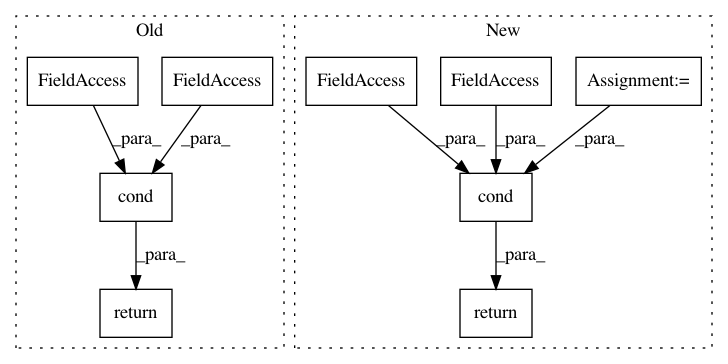

a8da3205f52527c363db5783283f25dd1721addd,tensorforce/core/explorations/epsilon_anneal.py,EpsilonAnneal,tf_explore,#EpsilonAnneal#Any#Any#Any#,42
Before Change
return epsilon
// Ternary evaluation. Check first two in first predicate, then both again in inner cond in true function.
return tf.cond(
pred=tf.logical_or(timestep < self.start_timestep, timestep > self.start_timestep + self.timesteps),
true_fn=true_fn,
false_fn=false_fn
)
After Change
completed_ratio = (tf.cast(x=timestep, dtype=util.tf_dtype("float")) - self.start_timestep) / self.timesteps
return self.initial_epsilon + completed_ratio * (self.final_epsilon - self.initial_epsilon)
pred = tf.logical_or(x=(timestep < self.start_timestep), y=(timestep > self.start_timestep + self.timesteps))
return tf.cond(pred=pred, true_fn=true_fn, false_fn=false_fn)
In pattern: SUPERPATTERN
Frequency: 3
Non-data size: 9
Instances
Project Name: reinforceio/tensorforce
Commit Name: a8da3205f52527c363db5783283f25dd1721addd
Time: 2017-12-02
Author: aok25@cl.cam.ac.uk
File Name: tensorforce/core/explorations/epsilon_anneal.py
Class Name: EpsilonAnneal
Method Name: tf_explore
Project Name: reinforceio/tensorforce
Commit Name: a8da3205f52527c363db5783283f25dd1721addd
Time: 2017-12-02
Author: aok25@cl.cam.ac.uk
File Name: tensorforce/core/explorations/epsilon_decay.py
Class Name: EpsilonDecay
Method Name: tf_explore
Project Name: tensorflow/models
Commit Name: 5cee7220217599ceccb191adf430eb914d148f87
Time: 2020-09-17
Author: tanzheny@google.com
File Name: official/vision/keras_cv/ops/box_matcher.py
Class Name: BoxMatcher
Method Name: __call__